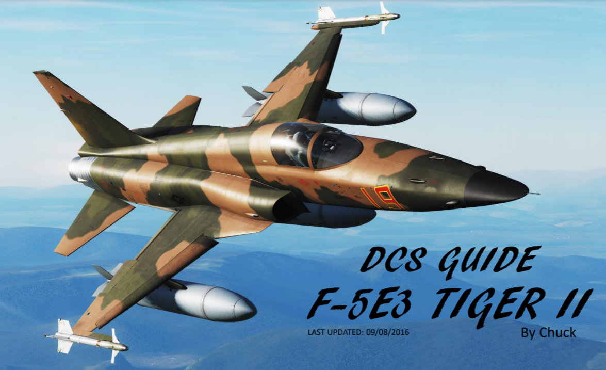

A finales de la década de 1950, la Fuerza Aérea necesitaba cazas supersónicos capaces de realizar ataques terrestres con armas convencionales (no nucleares). El objetivo clave era combinar alto rendimiento de combate con fácil dominio, bajo costo de mantenimiento y versatilidad. Quedó claro que un caza producido en masa tenía que ser un avión barato, sencillo y de bajo mantenimiento. En 1953, la American Northrop Corporation comenzó a diseñar un caza ligero con un ala delta y una entrada montada en la parte inferior. Edgar Schmued, el El diseñador del famoso P-51 Mustang y F-86 Sabre, que había estado trabajando en Northrop Corporation desde 1950, participó en el desarrollo del nuevo concepto de caza. Sin embargo, en 1955 el proyecto fue cancelado por varias razones. El proyecto continuó como un programa financiado con fondos privados y de ahí surgió finalmente el F-5.
Aunque est´ diseñado principalmente para el papel de superioridad aérea diurna, el avión también es una plataforma capaz de ataque a tierra. El F-5A entró en servicio a principios de la década de 1960. Durante el frio Guerra, se produjeron m´s de 800 hasta 1972 para los aliados de EE. UU. Aunque la USAF no tenía la necesidad reconocida de un caza ligero, adquirió aproximadamente 1.200 Northrop T-38 Aviones de entrenamiento Talon, que se basaron directamente en el F-5A